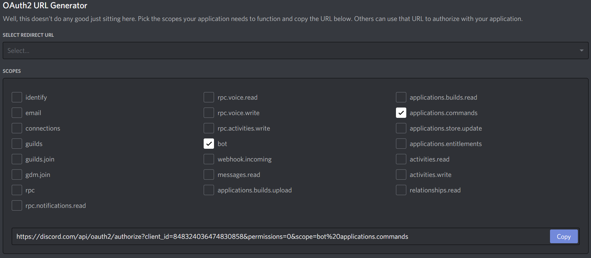

Getting started with application commands.
This guide will show you how to use application commands. If you have extra questions that aren't covered here you can come to our Discord server and ask around there.
Note
This guide shows the manual way of creating and handling application commands. We recommend using the Interaction Framework because it allows you to work with application commands and handle interactions in a much simpler and structurized way. You can find more info in the Interaction Framework Intro docs.
What is an application command?
Application commands consist of three different types. Slash commands, context menu User commands and context menu Message commands. Slash commands are made up of a name, description, and a block of options, which you can think of like arguments to a function. The name and description help users find your command among many others, and the options validate user input as they fill out your command. Message and User commands are only a name, to the user. So try to make the name descriptive. They're accessed by right clicking (or long press, on mobile) a user or a message, respectively.
All three varieties of application commands have both Global and Guild variants. Your global commands are available in every guild that adds your application. You can also make commands for a specific guild; they're only available in that guild. The User and Message commands are more limited in quantity than the slash commands. For specifics, check out their respective guide pages.
An Interaction is the message that your application receives when a user uses a command. It includes the values that the user submitted, as well as some metadata about this particular instance of the command being used: the guild_id, channel_id, member and other fields. You can find all the values in our data models.
Authorizing your bot for application commands
There is a new special OAuth2 scope for applications called applications.commands.
In order to make Application Commands work within a guild, the guild must authorize your application
with the applications.commands scope. The bot scope is not enough.
Head over to your discord applications OAuth2 screen and make sure to select the application.commands scope.

From there you can then use the link to add your bot to a server.
Note
In order for users in your guild to use your slash commands, they need to have the "Use Application Commands" permission on the guild.